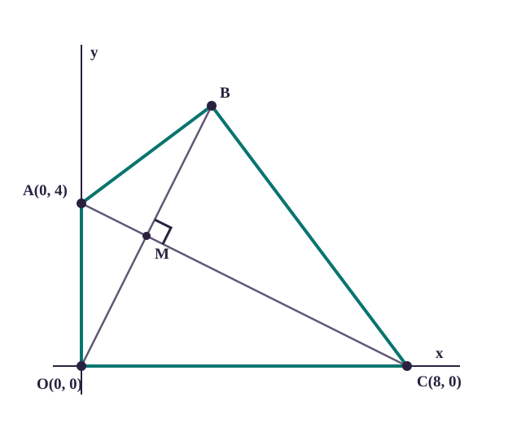
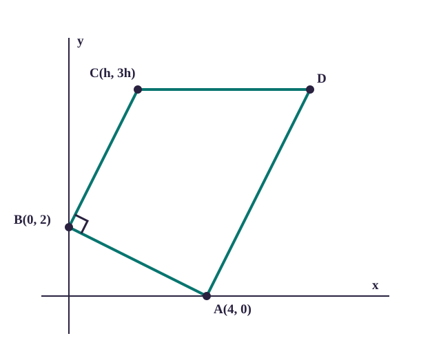

Perpendicular; the symmetry diagonal bisects the other diagonal.
Trapezium
One pair of opposite sides parallel.
May have a 90° angle.
No fixed general property.
A line of symmetry divides a shape into matching mirror halves.
A kite’s symmetry diagonal is the one lying on that line.
Only that diagonal is guaranteed to bisect the other. The other diagonal need not bisect the symmetry diagonal.
Read the named property, select its row, write the equations it guarantees, then solve.
Worked example
Worked example
A kite: use symmetry and perpendicular diagonals
Kite OABC has O(0, 0), A(0, 4) and C(8, 0). AC is its line of symmetry. OB is perpendicular to AC and is bisected by AC. Find the equations of AC and OB, then find B.

The coordinates determine the geometry; M is the crossing point of the diagonals.
Solution
Gradient of AC: m_AC = (0 - 4)/(8 - 0) = -1/2.
AC passes through A(0, 4): y - 4 = -1/2(x - 0), so AC: y = -x/2 + 4.
OB is perpendicular to AC. Its gradient is the negative reciprocal: m_OB = -1/(-1/2) = 2.
OB passes through O(0, 0), so OB: y = 2x.
At M, both equations give the same y-value: 2x = -x/2 + 4.
Multiply by 2: 4x = -x + 8, so 5x = 8 and x = 8/5 = 1.6.
Then y = 2(1.6) = 3.2, so M = (1.6, 3.2).
Because M is the midpoint of OB and O = (0, 0), B is twice M.
B = (3.2, 6.4).
Worked example
Worked example
A trapezium: combine three conditions
A(4, 0), B(0, 2) and C(h, 3h) are vertices of trapezium ABCD. BC is parallel to AD, angle ABC is 90°, and CD is parallel to the x-axis. Find h and D.

The diagram follows the stated parallel sides and places the right angle at B.
Solution
m_AB = (2 - 0)/(0 - 4) = -1/2.
Angle ABC is 90°, so BC is perpendicular to AB. Therefore m_BC = 2.
BC has the finite gradient 2, so its horizontal change h cannot be zero.
Using B(0, 2) and C(h, 3h): m_BC = (3h - 2)/h.
Set this equal to 2: 3h - 2 = 2h, so h = 2 and C = (2, 6).
CD is horizontal, so D has the same y-coordinate as C: y_D = 6.
AD is parallel to BC, so m_AD = 2.
With A(4, 0) and D(x_D, 6): 6/(x_D - 4) = 2.
6 = 2(x_D - 4), so x_D = 7.
D = (7, 6).
Quick check · 1
In parallelogram UVWX, UV is parallel to WX and VW is parallel to XU. What must its diagonals do?
Worked example
Worked example
A parallelogram: use the shared diagonal midpoint
A(1, 2), B(5, 4) and C(7, 8) are consecutive vertices of parallelogram ABCD. Find D.
Consecutive means next to each other around the boundary.
In cyclic order ABCD, A and C are opposite, while B and D are opposite.